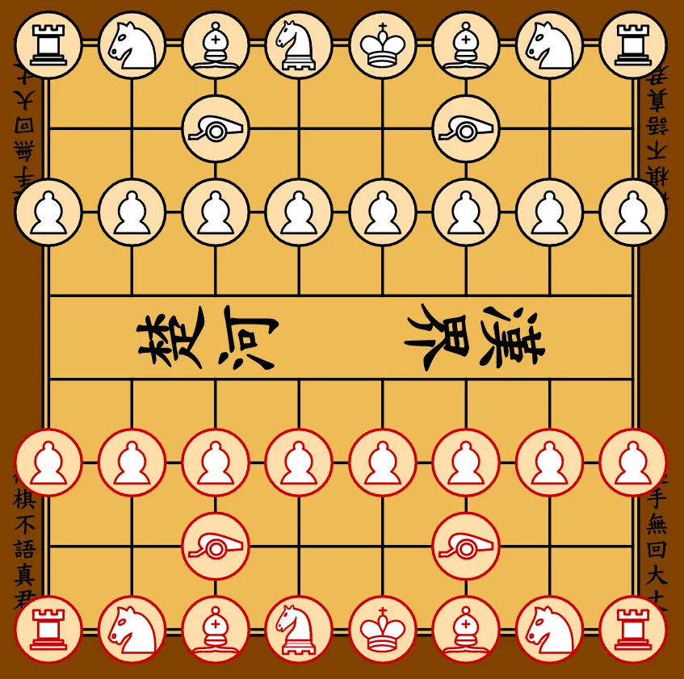

ゲームルール
1. 基本概念
- ゲームは二人のプレイヤーで対戦します：南側プレイヤーと北側プレイヤー。
- 南側プレイヤーが常に先手です。
- その後、交互に一手ずつ指します。
- 一手とは、以下のルールに従って自分の駒を一つ動かすことです。
- 「パス」はありません：自分の手番では、合法手を指すか、さもなければ対局は終了します。
- 熊棋の中心となる駒は将（帥）です：将が取られるか、守れなくなった時点で対局は終了します。
2. 盤と初期配置
2.1 盤
- 熊棋は8列8段（8×8）の盤で行われます。
- 南側プレイヤーから見て、列は左から右へアルファベットで表記します：a、b、c、d、e、f、g、h。
- 南側プレイヤーから見て、段は下から上へ数字で表記します：1、2、3、4、5、6、7、8。
- 南側プレイヤーは1段目に近い領域を占め、北側プレイヤーは8段目に近い領域を占めます。
- 「河」は4段目と5段目の間にあります。
2.2 駒
各陣営は以下の駒を持ちます：
- 将（帥）1枚
- 士（仕）1枚
- 車（俥）2枚
- 熊（雄）2枚
- 馬（傌）2枚
- 砲（炮）2枚
- 卒（兵）8枚
2.3 初期配置
両陣営の初期配置は構造的に同一で、鏡像対称となっています。

2.3.1 南側
- 1段目（a1からh1）：俥、傌、雄、仕、帥、雄、傌、俥。
- 2段目：c2とf2に炮が1枚ずつ。他のマスは空。
- 3段目：各マスに兵が1枚ずつ（a3からh3）。
2.3.2 北側
- 8段目（a8からh8）：車、馬、熊、士、將、熊、馬、車。
- 7段目：c7とf7に砲が1枚ずつ。他のマスは空。
- 6段目：各マスに卒が1枚ずつ（a6からh6）。
2.4 駒の表記規則
慣例として、各駒の種類には漢字とラテン文字の略称が対応しています。 南側は大文字、北側は小文字を使用します。 これらの規則は一部の棋譜システムやプログラム実装で使用されますが、 移動ルールには影響しません。
| 駒の種類 | 南側 | 北側 | ||
|---|---|---|---|---|
| 漢字 | 略 | 漢字 | 略 | |
| 士 | 仕 | A |
士 | a |
| 熊 | 雄 | B |
熊 | b |
| 砲 | 炮 | C |
砲 | c |
| 妃 | 妃 | E |
騛 | e |
| 将 | 帥 | G |
將 | g |
| 馬 | 傌 | H |
馬 | h |
| 車 | 俥 | R |
車 | r |
| 兵 | 兵 | S |
卒 | s |
3. 移動と駒取りの原則
- 自分の手番では、自陣の駒を一つ動かします。
- 移動とは、出発マスから到着マスへ駒を動かすことです。
- 駒は自陣の駒が占めるマスには移動できません。
- 到着マスに敵の駒がある場合、その駒を取り、盤から除去します。
- 特に断りがない限り、駒は他の駒を「飛び越える」ことができません：中間のマスはすべて空でなければなりません。
- 着手後に自分の将が王手されている状態になる手は違法です。
3.1 将（帥）
- 将は縦または横に1マス移動します。
- 将は隣接する敵駒のマスに移動することで駒を取ります。
- 将は宮に制限されません：盤上の任意の合法なマスに自由に移動できます。
- 将は敵に攻撃されているマスで手を終えることはできません。
3.2 士（仕）
- 士は斜めに1マス移動します。
- 士は斜めに隣接する敵駒のマスに移動することで駒を取ります。
- 士は宮に制限されません：盤上の任意の合法なマスに自由に移動できます。
3.3 車（俥）
- 車は縦または横に任意のマス数移動します。
- 車は他の駒を飛び越えることができません。
- 車は同じ行または列にある敵駒のマスに移動することで駒を取ります。
3.4 熊（雄）
- 熊は斜めに任意のマス数移動します。
- 熊は他の駒を飛び越えることができません。
- 熊は同じ対角線上にある敵駒のマスに移動することで駒を取ります。
3.5 馬（傌）
- 馬の移動は二段階で行われます：
- 出発マスから縦横いずれかの方向（上、下、左、右）に1マス；
- その中間位置から斜め外側に1マス。
- 馬は完全には飛び越えられません：隣接する縦横のマス（馬の「脚」）は空でなければなりません。そのマスが塞がっている場合、その方向への移動は阻まれます。
- 到着マスは空であるか、敵駒が占めていなければなりません。後者の場合、その駒を取ります。
3.6 砲（炮）
- 駒を取らない移動
-
- 砲は車と同様に移動します：縦または横に任意のマス数。
- 中間のマスはすべて空でなければなりません。
- 駒取り
-
- 砲は目標の敵駒と同じ行または列にいなければなりません。
- 砲と目標の間にちょうど1枚の駒（どちらの陣営でも可）がなければなりません：この駒を「台」と呼びます。
- 台と目標の間に他の駒があってはなりません。
- 砲は目標のマスに直接移動し、駒を取ります。
砲は台がない場合、または砲と目標の間に複数の駒がある場合は駒を取ることができません。
3.7 妃（騛）
妃は二つの異なる移動方式を組み合わせます：車の動きとナイトの動きです。
-
各手において、妃は以下の二つのモードから一つを選びます：
- 車モード
-
- 妃は縦または横に任意のマス数移動します。
- 他の駒を飛び越えることはできません。
- 敵駒のマスに移動することで駒を取ります。
- ナイトモード
-
- 妃は「L字型」に移動します：縦横いずれかの方向に2マス、その後直角方向に1マス。
- 中間の駒を飛び越えることができます。
- 到着マスは空であるか、敵駒が占めていなければなりません。後者の場合、その駒を取ります。
- 妃は一手につき一つのモードしか使用できません。組み合わせることはできません。
- 攻撃されているマス（特に王手の場合）を判断する際は、両方のモードで到達可能なすべてのマスを考慮します。
注：「ナイトモード」は3.5節で説明した馬の動きとは異なります。ナイトモードでは駒を飛び越えることができます。
3.8 兵（卒）
各陣営の兵は反対方向に進みます：
- 南側の兵は北へ進みます（段数が増加：3段目から8段目へ）。
- 北側の卒は南へ進みます（段数が減少：6段目から1段目へ）。
3.8.1 河を渡る前
- 南側の兵は1〜4段目にいる間は「河を渡っていない」状態です。
- 北側の卒は5〜8段目にいる間は「河を渡っていない」状態です。
- 河を渡る前、兵は：
- 前方に1マスのみ移動できます；
- 同様に駒を取ります（前方1マス）；
- 後退も横移動もできません。
3.8.2 河を渡った後
- 南側の兵は5段目以降に達すると「河を渡った」状態になります。
- 北側の卒は4段目以下に達すると「河を渡った」状態になります。
- 河を渡った後、兵は：
- 前方に1マス移動する能力を維持します；
- 横に1マス移動する能力を得ます（左または右）；
- 前方または横方向に駒を取ることができます；
- 依然として後退はできません。
4. 攻撃されているマス、王手、着手の合法性
4.1 攻撃されているマス
移動ルール（3.1〜3.8節）を適用し、障害物を考慮した上で、 ある陣営の駒がそのマスに移動して仮想的な敵駒を取ることができる場合、 そのマスはその陣営に攻撃されていると言います。
- マスが攻撃されているかどうかを判断する際、その移動が自分の将を王手にさらすかどうかは考慮しません（ピンされていても、マスは「攻撃されていない」ことにはなりません）。
- 兵は駒を取るのと同じ方法で攻撃します：
- 河を渡る前：前方1マス；
- 河を渡った後：前方または横方向1マス。
4.2 王手
- 将がいるマスが少なくとも一つの敵駒に攻撃されている場合、将は王手されています。
- 自分の将が王手されている状態になる手は違法です。
- したがって、プレイヤーは以下のことができません：
- 現在の王手を無視する；
- 自分の将を攻撃されているマスに意図的に移動する；
- 将を守っている駒を動かして将を攻撃にさらす。
4.3 王手への対応
プレイヤーが手番開始時に将が王手されている場合、王手を解除する手を指さなければなりません。可能な対応は三種類です：
- 将を攻撃されていないマスに移動する；
- 王手をかけている駒を取る；
- 攻撃している駒と将の間に駒を挟む。
これらの対応がいずれも不可能な場合、将は詰みです（6.1節参照）。
4.4 否定規則
- キャスリングはありません。
- 取った駒を打ち直すことはできません。
4.5 将の対面禁止
以下の条件がすべて満たされるとき、両将は「対面」していると言います：
- 両将が同じ列にいる；
- 両将の間に駒がない；
- 南側の帥が北側の將より下の段にいる。
このような配置は禁止されています。いかなる合法手もこの配置をもたらすことはできません。
5. 兵の昇格
- 兵が合法手で敵陣の最終段（南側は8段目、北側は1段目）に到達したとき、プレイヤーはその兵を昇格させることができます。
- 昇格は任意です：プレイヤーは兵をそのままにするか、即座に昇格させるかを選べます。
- 最終段にいる兵は、プレイヤーがその兵を動かした直後であれば、後から昇格させることができます。これにより、プレイヤーは適切なタイミングまで昇格の決定を遅らせる戦略が可能になります。
- 昇格する場合、兵は取り除かれ、同じマスにプレイヤーが選んだ以下の駒のいずれかが置かれます：
- 妃、
- 士、
- 砲、
- 車、
- 熊、
- 馬。
- 将への昇格は禁止されています。
- 昇格する駒の選択は、盤上に現在ある駒や取られた駒に関係なく自由です。したがって、プレイヤーは同じ種類の駒を複数持つことができます。
6. 終局
6.1 詰みによる勝利
以下の条件がすべて満たされるとき、一方は詰みです：
- その将が王手されている；
- 王手を解除する合法手が存在しない。
詰まされた側の負け、相手の勝ちです。
6.2 ステイルメイト
ステイルメイトは以下の場合に発生します：
- あるプレイヤーの手番である；
- そのプレイヤーに合法手がない；
- そのプレイヤーの将は王手されていない。
熊棋では、ステイルメイトは動けなくなった側の負けとなります。
6.3 同一局面三回による引き分け
同一局面が対局中に三回現れたとき、その局面は繰り返しと見なされます。
二つの局面が同一であるとは：
- 同じ陣営の同じ駒が同じマスを占めている；
- 同じ陣営の手番である。
ある局面が三回目に達したとき、対局は引き分けと宣言されます。
6.4 戦力不足による引き分け
どちらの陣営も相手を詰ませる手段がない場合、 どのような手順を続けても、戦力不足による引き分けとなります。 これには、盤上に両将のみが残っている局面などが含まれます。
このような局面は引き分けとなります。
6.5 その他の場合
上記以外にも、投了、時間切れ、または双方の合意による引き分けで対局が終了することがあります。